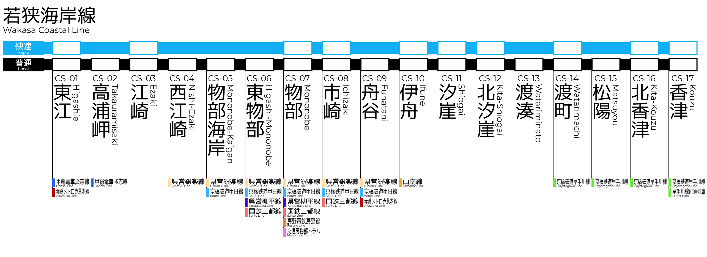
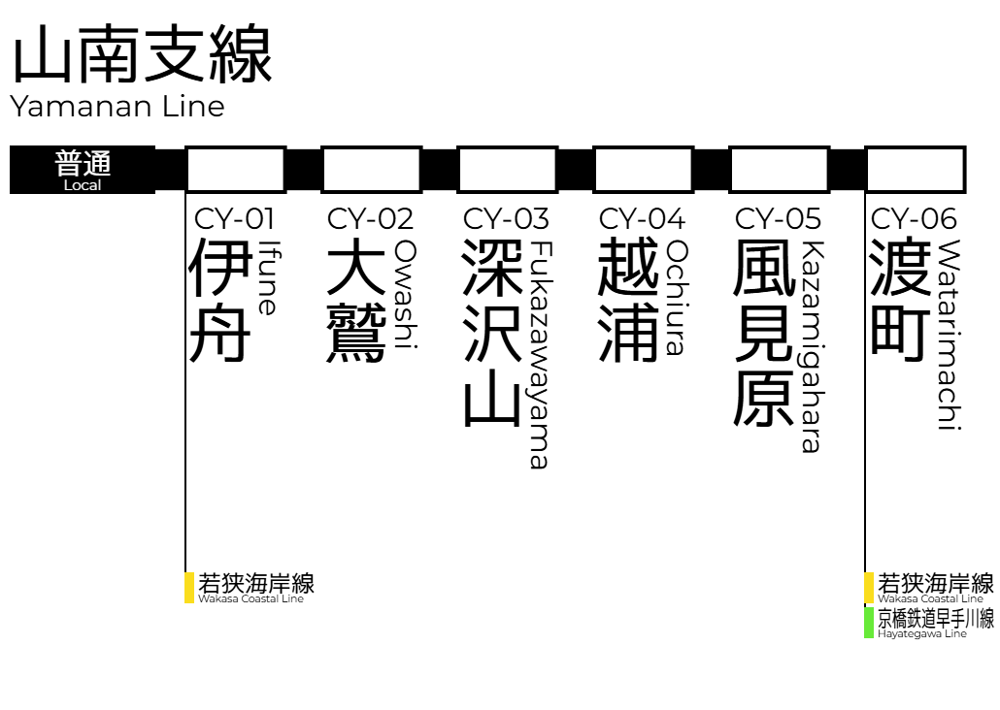

路線案内
若狭海岸線
若狭海岸線は、東江から香津まで若狭県の海岸沿いを横断する、主要な鉄道路線です。青く広がる若狭湾を望む風景を走る区間が多く、通勤・通学の足であると同時に、観光客にも人気の高い路線となっています。 沿線には江崎・物部・伊舟といった都市エリアが広がり、各都市の中心を結ぶ利便性の高い鉄道として、多くの利用者に親しまれています。伊舟や汐崖周辺では漁港や温泉街が近く、車窓からの美しい景観が魅力です。また他社線との乗り換え駅も多く、県内外への移動に便利な鉄道ネットワークを形成しています。 海沿いの絶景と地域の暮らしを支える実用性が両立した、まさに「若狭県の顔」といえる鉄道路線です。
乗り換え可能な路線(敬称略)
- 山南支線
- 京橋鉄道甲日線
- 京橋鉄道早手川線(直通あり)
- 県営銀楽線
- 県営柳平線
- 国鉄三都線
- 甲総電車談志線
- 赤蔦メトロ赤蔦本線
- 房野電鉄房野線
- 物部市交通局物部トラム
山南支線
山南支線は、若狭海岸線の伊舟駅から山側へ分岐し、渡町までを結ぶローカル線です。のどかな集落と里山風景が広がる沿線をゆっくり走り、地域の生活に欠かせない交通手段として親しまれています。 大鷲や深沢山、風見原といった駅の周辺には小さな集落や自然が多く、四季ごとに表情を変える山の景色が乗客を迎えます。紅葉や新緑の季節には、沿線の美しい風景を求めて訪れる乗客も増え、隠れた観光路線としても知られています。 終点の渡町では若狭海岸線のほか、若狭方面への路線とも接続しており、山と海、都市と自然を結ぶハブとして機能しています。静かであたたかい地域性が感じられる、若狭の魅力が詰まった支線です。